Side quest: combined stresses, stress distributions, and stuff
This side quest accompanies Problem 1: Fully Stressed Beams and takes a look at how combined stresses appear in a beam.
Contents
Variables
Continuing with variables from above mentioned link, we have:
load_dis=50e3; Len=20;wid=3;d=0.25; R_left=load_dis*Len/2; I=wid*d^3/12;
Defining shear and bending moment distribution
V = @(x) -load_dis.* x + R_left; M = @(x) -load_dis.* x.^2 *0.5 + R_left.*x;
Shear distribution factor: this is the shape factor that accompanies the shear stress equation
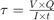
. For the case of a rectangular cross-section, the obtained results are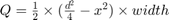
Q= @(x) 0.5.* (d.^2/4 -x.^2).* wid;
Stress equations
Normal stress is defined by the prismatic assumption-based flexure formula:
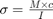
Here, Normal stress becomes a 2-dimensional formula varying along length and depth of beamNormal= @(x,c) M(x).*c / I;
Shear stress is defined by elementary shear formula (which holds true for several engineering applications). The equation is
shear= @(x,c) V(x).*Q(c) / I / wid;
Von mises equivalent stress is defined using several methods involving principal stress and/or shear stresses. Here, a simpler case is considered where
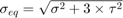
vonEq= @(x,c) sqrt( Normal(x,c).^2 + 3*shear(x,c).^2 );
Solving process
This is particularly interesting problem to solve, since we have two vectors of unequal size (say, n and m) and wish to calculate a function for all combinations of the two vectors (generating an n*m matric). The method used here is to create the vectors and replicate these vectors into a matrix using repmat function. The vector with n size is expanded m times, and vice versa;
x=repmat([0:0.05:Len], length(d/2:-0.005:-d/2), 1); c=repmat([d/2:-0.005:-d/2]', 1, length(0:0.05:Len));
Contour plots
The contour plots show the stress distribution in a clean way. Using abs function to account for -ve values of normal and shear stresses. Here are the plots:
figure contour(abs(Normal(x,c)),20) colorbar xlim([1 401]) ylim([1 51]) title("Normal stress") figure contour(abs(shear(x,c)),20) colorbar xlim([1 401]) ylim([1 51]) title("Shear stress") figure contour(abs(vonEq(x,c)),20) colorbar xlim([1 401]) ylim([1 51]) title("Von Mises equivalent")
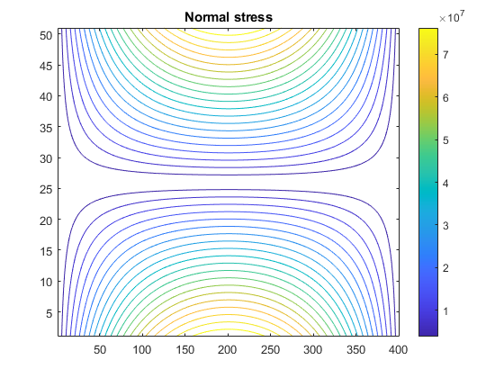
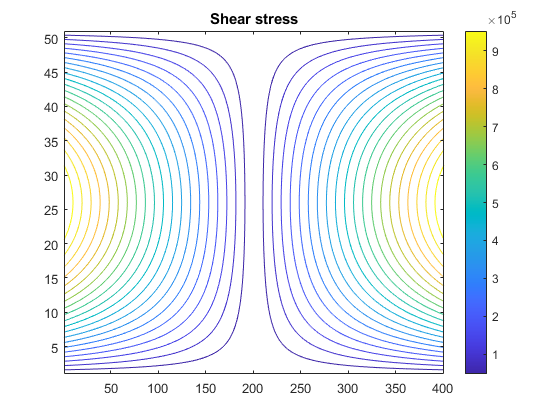
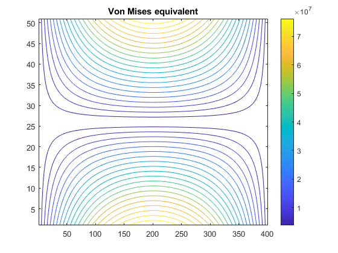
Surface plots
figure surf(abs(Normal(x,c)),'EdgeColor','none') view(0,90) colorbar xlim([1 401]) ylim([1 51]) title("Normal stress, max:"+max(max(Normal(x,c)))); figure surf(abs(shear(x,c)),'EdgeColor','none') view(0,90) colorbar xlim([1 401]) ylim([1 51]) title("Shear stress, max:"+max(max(shear(x,c)))) figure surf(vonEq(x,c),'EdgeColor','none') view(0,90) colorbar xlim([1 401]) ylim([1 51]) title("von Mises equivalent, max:"+max(max(vonEq(x,c))))
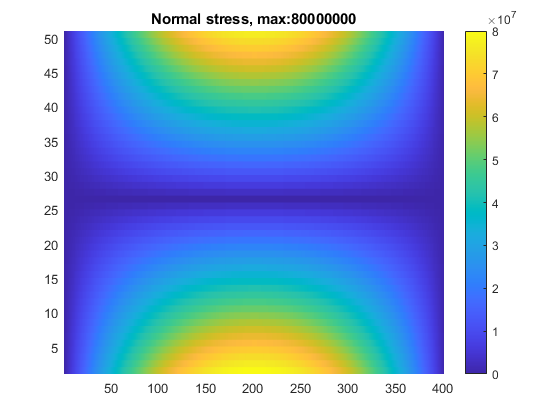
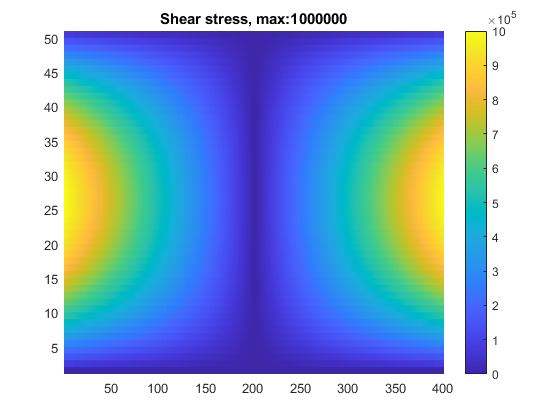
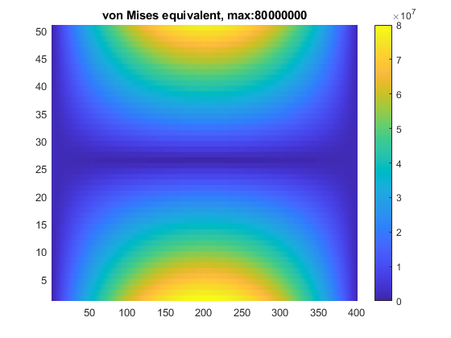
Observations
- The normal stress in bending is well along the order of
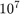
, whereas the shear stress is within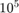
range. This shows the affect of shear stress on the beam design. - The maximum value for von Mises equivalent stress is found to be exactly the same as in case of bending. This is not surprising, for maximum shear occurs at supports while maximum bending occurs at the center of the beam. These calculations visualize the results.
- This activity interests me to work on stress trajectory visualizations, a theme I may tackle in future.